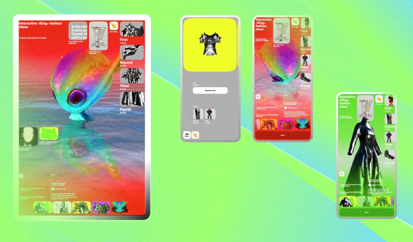

II часть · 2 глава
Разработка макета
Всё, что происходит в Figma до того, как вы откроете редактор кода. Сетка, композиция, адаптивы, подготовка графики.

Дизайн · 12 минут
Сетка и композиция
Концептуальный и функциональный обзор сеток в вебе и композиции в веб-плакатах
Дизайн · 5 минут
Доработка главного экрана
О важности первого экрана и какие особенности стоит учитывать при его разработке

Дизайн · 5 минут
Адаптивный и респонсивный дизайн
В чём разница между подходами и зачем нужны адаптивы вообще